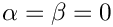
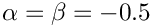

Routines For Orthogonal Polynomial Calculus and Interpolation
Spencer Sherwin, Aeronautics, Imperial College London
Based on codes by Einar Ronquist and Ron Henderson
Abbreviations
- z - Set of collocation/quadrature points
- w - Set of quadrature weights
- D - Derivative matrix
- h - Lagrange Interpolant
- I - Interpolation matrix
- g - Gauss
- gr - Gauss-Radau
- gl - Gauss-Lobatto
- j - Jacobi
- m - point at minus 1 in Radau rules
- p - point at plus 1 in Radau rules
--------------------------------------------------------------------—
MAIN ROUTINES
--------------------------------------------------------------------—
Points and Weights:
- zwgj Compute Gauss-Jacobi points and weights
- zwgrjm Compute Gauss-Radau-Jacobi points and weights (z=-1)
- zwgrjp Compute Gauss-Radau-Jacobi points and weights (z= 1)
- zwglj Compute Gauss-Lobatto-Jacobi points and weights
Derivative Matrices:
- Dgj Compute Gauss-Jacobi derivative matrix
- Dgrjm Compute Gauss-Radau-Jacobi derivative matrix (z=-1)
- Dgrjp Compute Gauss-Radau-Jacobi derivative matrix (z= 1)
- Dglj Compute Gauss-Lobatto-Jacobi derivative matrix
Lagrange Interpolants:
- hgj Compute Gauss-Jacobi Lagrange interpolants
- hgrjm Compute Gauss-Radau-Jacobi Lagrange interpolants (z=-1)
- hgrjp Compute Gauss-Radau-Jacobi Lagrange interpolants (z= 1)
- hglj Compute Gauss-Lobatto-Jacobi Lagrange interpolants
Interpolation Operators:
- Imgj Compute interpolation operator gj->m
- Imgrjm Compute interpolation operator grj->m (z=-1)
- Imgrjp Compute interpolation operator grj->m (z= 1)
- Imglj Compute interpolation operator glj->m
Polynomial Evaluation:
- jacobfd Returns value and derivative of Jacobi poly. at point z
- jacobd Returns derivative of Jacobi poly. at point z (valid at z=-1,1)
--------------------------------------------------------------------—
LOCAL ROUTINES
--------------------------------------------------------------------—
- jacobz Returns Jacobi polynomial zeros
- gammaf Gamma function for integer values and halves
---------------------------------------------------------------------—
Useful references:
- [1] Gabor Szego: Orthogonal Polynomials, American Mathematical Society, Providence, Rhode Island, 1939.
- [2] Abramowitz & Stegun: Handbook of Mathematical Functions, Dover, New York, 1972.
- [3] Canuto, Hussaini, Quarteroni & Zang: Spectral Methods in Fluid Dynamics, Springer-Verlag, 1988.
- [4] Ghizzetti & Ossicini: Quadrature Formulae, Academic Press, 1970.
- [5] Karniadakis & Sherwin: Spectral/hp element methods for CFD, 1999
NOTES
- Legendre polynomial

- Chebychev polynomial

- All array subscripts start from zero, i.e. vector[0..N-1]